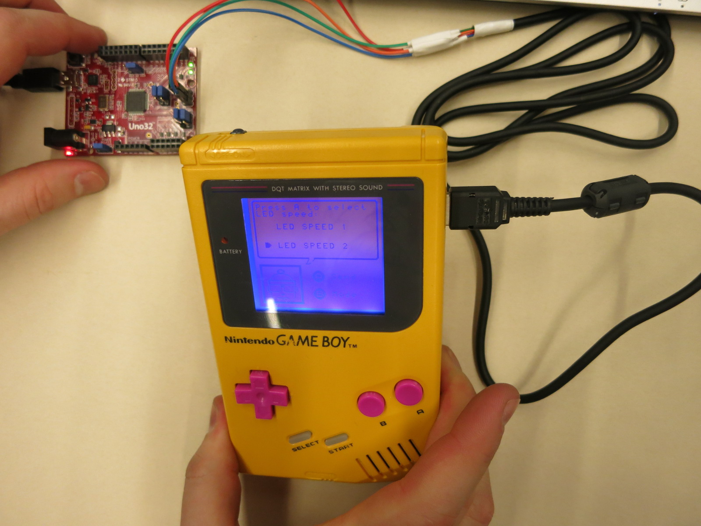

Game Boy is not dead
This was the result of a school assignment, to make something with a Uno32 board. The Game Boy is connected to the Uno32 via the Game Boy link port and a moderately modified link cable, to the SPI-port on the Uno32. The Game Boy can receive a textstring from the PIC32 microcontroller and display it on screen, as well as controlling the LED-speed on the on-board LED lights on the Uno32 board. The code can be found here.
The initial idea was to create a Game Boy Twitter client, but it ended up being too complex to pull off in time. However, the idea is much too fun to just let it go, so I will try to complete it later on. So stay tuned, I guess.
- 